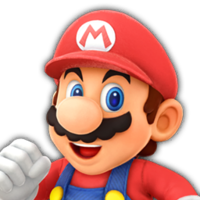

Mario
Mario is tot nu toe bij elke Mario Party een personage. Zijn speciale dobbelsteen, bevat 3x een 3, 1x een 1, een 5 en een 6. Dus opzicht is dat een gemiddelde dobbelsteen.
Heb je Super Mario Party voor de Nintendo Switch en ben je nieuwsgierig naar de verschillende dobbelstenen van de personages? Dan ben je op de goede adres. Klik op de knoppen of met je linker- en rechterpijlknop om de verschillende personages te bekijken. Als je over een personage hovert, wordt het schermpje groter.
Mario is tot nu toe bij elke Mario Party een personage. Zijn speciale dobbelsteen, bevat 3x een 3, 1x een 1, een 5 en een 6. Dus opzicht is dat een gemiddelde dobbelsteen.
Luigi is net als Mario aanwezig bij alle Mario Party's. Zijn speciale dobbelsteen heeft een 5, een 6, een 7, maar ook 3x een 1, dus het heeft 50% kans dat je goed voor uit gaat, maar ook langzaam gaat.
Peach is ook altijd aanwezig. Haar speciale dobbelsteen bevat een 0, een 2, een 6, maar ook 3x een 4, dus opzicht is het een goede dobbelsteen.
Daisy kwam pas voor in Mario Party 3, maar sinds dien is ze altijd aanwezig. Haar speciale dobbelsteen heeft 4x een 3 en 2x een 4. Dus als je ergens op wilt komen waar je een 3 of een 4 voor nodig hebt, is deze dobbelsteen handig.
Wario doet al vanaf het bergin mee met Mario Party. Hij heeft alleen niet meegedaan aan de gameboy versie. Zijn speciale dobbelsteen bevat 4x een 6 en 2x -2 muntjes. Dus je komt of ver vooruit, of je verliest muntjes.
Waluigi deed tegelijk met Daisy mee met de Mario Party. Zijn speciale dobbelsteen bevat 2x een 5, een 7, een 1, een 3 en -3 muntjes. Dus je hebt 50% kans dat je ver vooruit gaat, maar ook dat je langzaam gaat of munten verliest.
Yoshi doet ook altijd mee met Mario Party. Zijn speciale dobbelsteen heeft een 0, een 1, 2x een 3, een 5 en een 7. Kortom, de dobbelsteen is gebalanceerd.
Rosalina deed pas mee met Mario Party, na de 10e versie voor de WII U. Haar dobbelsteen bevat 2x 2+ muntjes, een 2, een 3, een 4 en een 8. Dus je kan best wel vooruit met deze dobbelsteen, of je krijg munten.